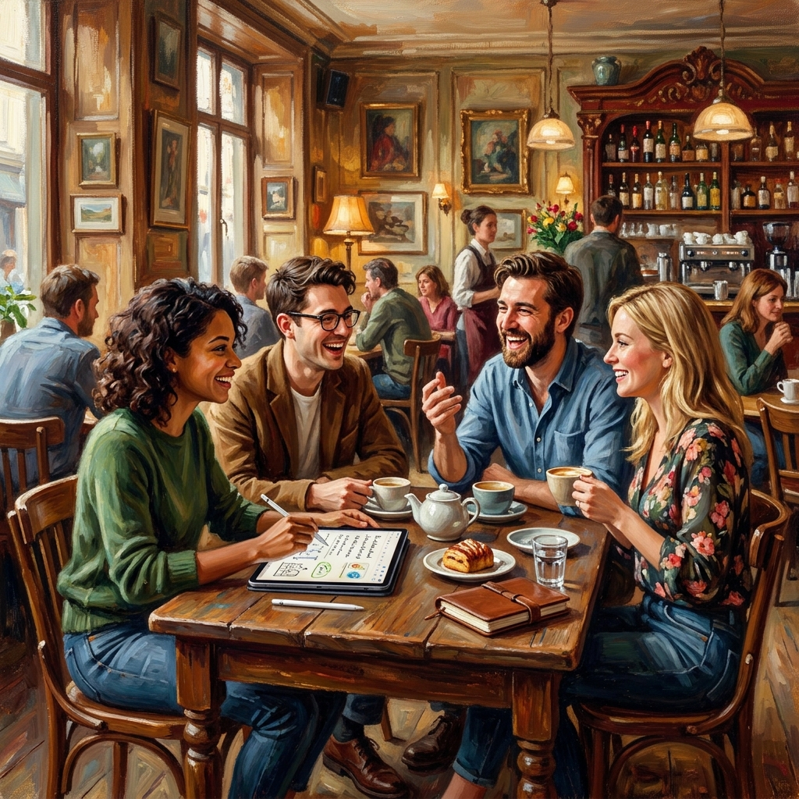

One of our main goals with the iScrev ecosystem is to break the mold of sterile, purely utilitarian productivity tools. We believe that technology should feel as comfortable, inspiring, and natural as a well-worn physical notebook. Today, we want to take a visual journey through how iScrev fits into your daily life.

The classic warmth: Connecting ideas in a cozy environment.
The Coffee Shop Thinkers
Whether you're in a bustling urban cafe or a quiet neighborhood coffee shop, the environment you choose heavily influences your flow state. The iScrev Notes interface was specifically designed with warm tones and low contrast to blend perfectly with these environments.
It feels less like staring at a glowing screen and more like looking at a warm piece of paper illuminated by the ambient light of the room. This makes long sessions of reading, studying, or writing incredibly comfortable.
Modern collaboration: High-tech tools with a human touch.
Professional Collaboration
The transition from a quiet study session to an active, collaborative environment should be seamless. With iScrev XBoard, professionals can bring their ideas to the forefront. Whether you're in a coworking space or a modern office, the digital whiteboard allows you to sketch concepts, annotate dynamically, and explain complex ideas to colleagues without the friction of complicated menus.
Relaxed creativity: Sharing ideas should always feel this natural.
Vibrant Creativity
Ultimately, productivity isn't just about output; it's about the joy of the process. Discussing a new project with friends, outlining a story, or solving a mathematical equation shouldn't feel like a chore. The tools you use should match the vibrant energy of the moment.
The iScrev ecosystem is built for these moments. It’s technology that steps out of your way, letting your natural creativity take center stage.